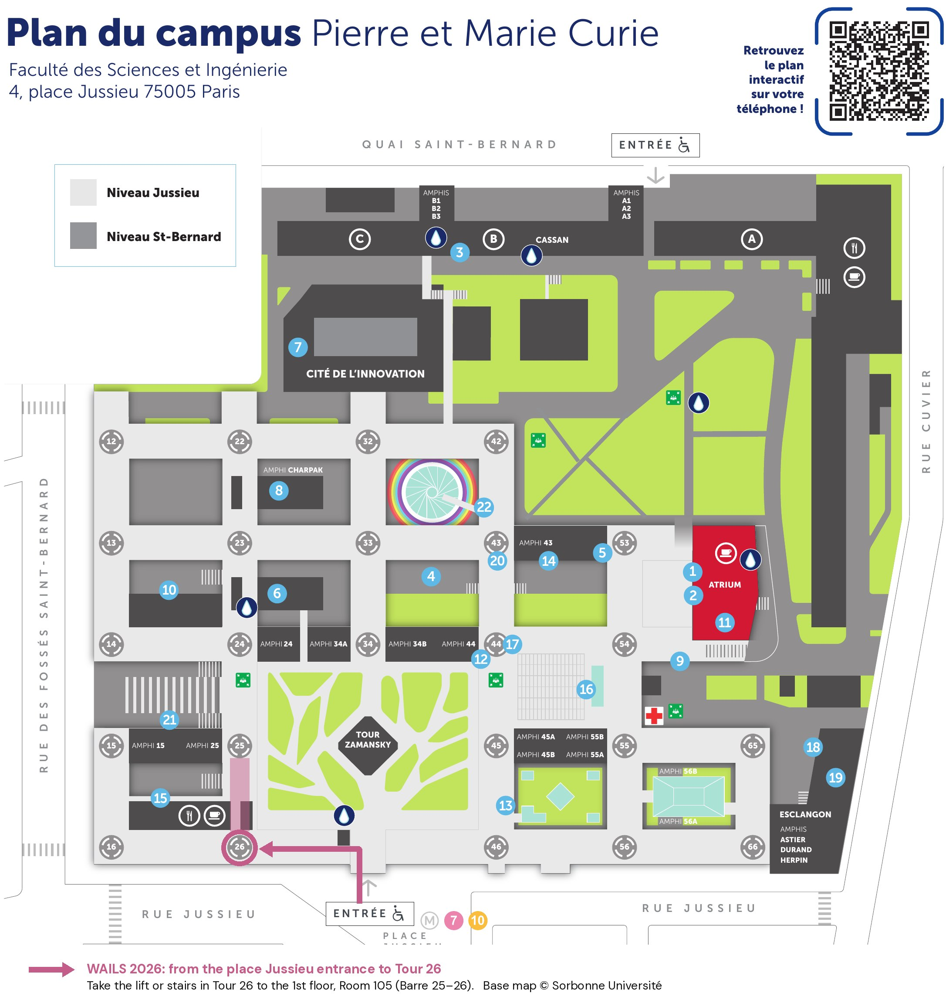

Attend
Venue & Access
WAILS 2026 takes place in Room 105, on the first floor of Tour 26, at the Pierre et Marie Curie campus of Sorbonne Université.
← Back to Home
Where
Campus
Pierre et Marie Curie
4 place Jussieu, 75005 Paris
Building
Tour 26
Corridor 25–26, 1st floor
Room
105
Signposted as 25-26 / 105
How to Get to the Room
- Take Metro line 7 or 10 to Jussieu station and come out on place Jussieu.
- Enter the campus through the main entrance on place Jussieu (the entrance on the rue Jussieu side, marked Entrée on the map).
- Once on the campus esplanade, turn left and walk along the row of towers closest to rue Jussieu.
- Tour 26 is the first tower you reach, at the corner of the campus.
- Go up to the 1st floor and follow the signs to Room 105 in the corridor between Tour 25 and Tour 26.
Route from the place Jussieu entrance to Tour 26. Click the map to open it in full size. Base map © Sorbonne Université.

↓ Download the map with the route (JPG, 450 KB)
↓ Download the full campus map (PDF, 285 KB)
Accessibility
The main entrance on place Jussieu is accessible to people with reduced mobility.
Getting to Paris and to the campus by public transport is described on the
Travel Information page.